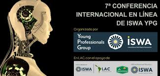

Proyecto Fracasado Nacional: Educa 2024
Autores
Ministerio de Educación de Ecuador en colaboración con empresa local.
Descripción
Proyecto para implementar una plataforma digital que gestionara matrículas, notas y comunicación en escuelas públicas. Se lanzó en septiembre 2024 con expectativas de modernizar el sistema educativo nacional.
Motivos de fracaso
- Falta de pruebas previas, causando fallas técnicas frecuentes.
- Capacitación insuficiente para docentes y personal administrativo.
- Infraestructura digital deficiente en zonas rurales.
- Problemas de interoperabilidad con sistemas existentes.
Costos
Aproximadamente 2 millones de dólares invertidos en desarrollo, capacitación y soporte técnico.
Proyecto Fracasado Internacional: LearnConnect
Autores
Startup internacional con sede en EE.UU. y Europa.
Descripción
Plataforma lanzada en octubre 2024 para conectar estudiantes y profesores de distintas partes del mundo para intercambio académico y colaborativo.
Motivos de fracaso
- Poca adopción de usuarios debido a competencia con redes sociales ya consolidadas.
- Problemas de privacidad y seguridad de datos.
- Estrategias de marketing insuficientes y mala localización en mercados emergentes.
Costos
Inversión estimada en 5 millones de dólares, con pérdidas por falta de ingresos.
Proyecto Exitoso Nacional: App Salud Ecuador
Autores
Ministerio de Salud Pública del Ecuador y equipo de desarrolladores nacionales.
Descripción
Aplicación móvil lanzada en enero 2025 para monitorear y brindar atención preventiva en salud pública, incluyendo agenda de vacunación y seguimiento de síntomas de enfermedades.
Efectos
- Mejora en la gestión de campañas de vacunación, aumentando cobertura en un 20%.
- Reducción en tiempo de atención primaria.
- Fortalecimiento de la salud preventiva en zonas urbanas y rurales.
Costos
1.2 millones de dólares, con apoyo del Banco Mundial y fondos locales.
Proyecto Exitoso Internacional: GreenTech Solutions
Autores
Consorcio internacional de empresas tecnológicas y ONG ambientalistas.
Descripción
Lanzada en marzo 2025, esta plataforma promueve tecnologías limpias y facilita el intercambio de conocimiento para reducción de emisiones de carbono a nivel global.
Efectos
- Implementación en más de 50 países.
- Reducción estimada de emisiones en 10% en sectores participantes.
- Fomento a políticas públicas verdes en varios gobiernos.
Costos
Inversión de 15 millones de dólares financiados por entidades públicas y privadas.
